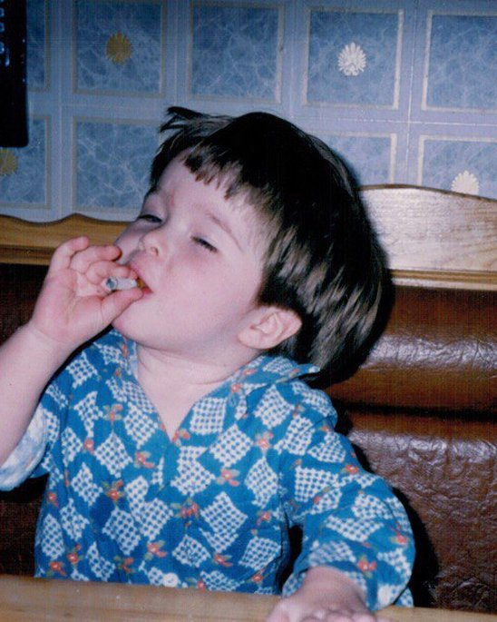

Отношения
С собой, с близкими, с партнёром, с миром. Когда рядом с людьми то тесно, то одиноко, и непонятно, как иначе.
// 5 лет назад писал автотесты, сейчас помогаю людям переписать кое-что важнее
Герман Олейник — студент-практикующий психолог, экзистенциально-гуманистический подход. Я пришёл в профессию из IT и выгорания, поэтому знаю, как порой трудно меняться.
человечность
сущ. · от «человек»
способность осознавать свою конечность — и всё равно стремиться прожить жизнь достойно и увлекательно, делая то, что нравится, с горящим сердцем. Чтобы однажды ответить «да» на предложение повторить это путешествие.
а в нём всегда теплее, когда есть с кем смеяться, рыдать и обниматься.
За каждым запросом скрываются живые человеческие истории. Если что-то близко хотя бы в одном пункте и есть желание узнать себя — этого достаточно, чтобы обратиться.
С собой, с близкими, с партнёром, с миром. Когда рядом с людьми то тесно, то одиноко, и непонятно, как иначе.
Тревожиться нормально. Но иногда тревога не выключается и начинает фоном жить за тебя.
Расставание, развод, уход близкого, потеря работы или опоры. Когда привычная почва ушла из-под ног.
Когда внутренний критик громче всех, неловко заявить о себе, а за свои же границы бывает стыдно.
Снаружи «всё ок», а внутри пусто. Кажется, что живёшь чужую жизнь и не на своём месте.
Спринты, дедлайны, KPI, а ты где-то в самом конце этого списка.
Давно пора что-то поменять: работу, город, привычный сценарий. Но сделать первый шаг страшно.
Когда еда стала способом справляться с чувствами, а с собственным телом всё труднее найти общий язык.
Не нашёл здесь свой запрос? Это в порядке вещей. Напиши и обсудим лично.
Экзистенциально-гуманистический подход — это разговор лицом к лицу, где ты не набор симптомов, а живой человек со своей историей и выбором.
Человек человеку — сиблинг: я рядом, а не сверху, без оценок и ярлыков.
Готовых ответов у меня нет — их попросту не существует и у каждого свой. Но я могу быть близко и помогать искать твой.

кто я?
гений миллиардер филантроп футболист каратист психолог комик обезьяна пёс монах коллега студент брат мужчина поэт прозаик сын друг
Честно говоря, до сих пор трудно ответить на этот вопрос. Поэтому просто:
В психологию я пришёл не по прямой. За плечами инженерное образование, около трёх лет в IT (тестирование и разработка) и порядка полутора лет в международных продажах.
Корпоративный мир я знаю изнутри: спринты, дедлайны, KPI, многозадачность, выгорание. Знаю и то, как страшно решиться всё поменять, потому что проходил это сам. Поэтому истории про карьеру, «не своё место» и поиск себя мне понятны без перевода. Я верю, что меняться и переосмыслять жизнь можно в любом возрасте и из любой точки — какой бы ни была предыстория. Поэтому работаю бережно и в партнёрстве: мы идём с той скоростью и в те темы, к которым есть готовность.
С 2026 года веду частную практику под регулярной супервизией и с личной терапией с 2024-го. То, через что проходят люди, знакомо мне и с другой стороны кресла.
как всё устроено
Никаких форм и сложных правил. Вот всё, что важно знать заранее.
Знакомство. Ты рассказываешь, что привело; я слушаю и задаю вопросы. Расскажу и о себе: как устроена работа и в чём особенности подхода. Вместе посмотрим, подходим ли мы друг другу.
Работаем регулярно, от одного раза в неделю. Ритм важнее интенсивности: именно он даёт опору.
Онлайн из любого города и часового пояса. В Москве можно встречаться очно.
В течение 24 часов после сессии. 55 минут, 2 500 ₽.
Отменить бесплатно можно за сутки. Если предупредить позже, встреча оплачивается. Если отменяю я, следующая будет бесплатной. В этом вопросе всё зеркально.
Всё, что звучит на сессии, остаётся между нами. Я не собираю никаких данных и не прошу анкет, поэтому на сайте нет ни форм, ни записи.
Из технического — только тихое место и стабильный интернет. А по сути нужно твоё желание говорить, чувствовать и понемногу брать ответственность за свою жизнь. Эту работу я не сделаю за тебя, но пройду её рядом.
Делать выбор быть собой — не роскошь, а необходимость.
вне работы
Вне кабинета я пишу катрены и люблю стихи — для меня стих это фотография души. Закончу тем, что близко:
Под копны волос проникнет ли удар?
Мысль одна под волосища вложена:
«Причесываться? Зачем же?!
На время не стоит труда,
а вечно
причесанным быть
невозможно».
— Владимир Маяковский